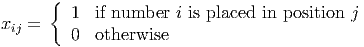

(Hint: The optimal Lagrangian multipliers are integral.)
Solution:
We initialize with all Lagrangian multipliers equal to zero, giving a solution:

Following equation (3.14) on page 484 of the text, we set up the Lagrangian relaxation as
 | (1) |
We adjust λ according to the degrees of the vertices in the initial 1-tree, leading to the choice
The modified cost matrix and an optimal 1-tree are then:
|
|

We adjust λ according to the degrees of the vertices in the current 1-tree, leading to the choice

The modified cost matrix and an optimal 1-tree are then:
|
|

Since this is a tour, it is optimal, with value 50.

One unit of commodity A must be shipped from a to k and one unit of commodity B must be shipped from h to f. The flows must be integral. The cost of shipping one unit of flow along an arc is one for each commodity, and the total capacity of each arc is also one. The capacity is the sum of the flow in both directions. A Lagrangian relaxation for the integer multicommodity flow problem could be constructed by placing the upper bound constraints on the arcs in the objective function. If the Lagrangian multipliers are set equal to zero, what is the value of the Lagrangian relaxation? Find a choice of Lagrangian multipliers for which the optimal solution to the Lagrangian relaxation gives the optimal solution to the multicommodity flow problem. How does the optimal value of the Lagrangian relaxation compare to the optimal value of the LP relaxation?
Solution:
Let E denote the set of edges and V the set of vertices. Let xeq denote the flow of commodity q on edge e ∈ E. We denote the two commodities as q = ak and q = hf. Let s(q) and t(q) denote the start and end vertices for commodity q. Let δ+(v) denote the edges leaving node v, and δ-(v) the set of edges entering node v.
The Lagrangian relaxation is

When λe = 0 for all e ∈ E, the optimal value of the Lagrangian relaxation is 6, achieved by the path h - j - k - f for commodity hf, and by the path a - b - j - k for commodity ak.
Both paths use the edge e = (j,k), so try λjk = 1. One optimal solution to the Lagrangian relaxation is then to use the paths a - b - j - k and h - g - p - l - f, with value 7. Since this solution is feasible in the multicommodity problem, it is optimal.
The constraint matrix for the Lagrangian Relaxation is TU, so the value of the LP relaxation is equal to the value of the Lagrangian Dual. One fractional solution to LP relaxation with value 7: flows of 0.5 along the 4 paths a - b - j - k, a - b - p - l - k, h - j - k - f, h - g - p - l - f. This is the average of 2 optimal integral solutions to the LP relaxation.

Solve this problem using Bender’s decomposition. (Take the problem
as the initial relaxation (RMP).)
Solution:
Solution to (RMP) is = 28, = (0, 0). Objective function for the subproblem is (b - HT y)T u = bT u since y = 0. Subproblem is:

Solution is unbounded, with a ray r1 = (0, 0, 0, 0, 1, 0, 0, 0, 0)T . Add constraint (r1)T Hy ≤ bT r1 to (RMP):
Solution is = (0, 1), = 28, with value 18. Updated subproblem with objective (b - HT y)T u is:

Optimal value is 11 < . One solution is u1 = (0, 0, 0, 0, 0, 8, 9, 5, 6)T . Add constraint z + (u1)T Hy ≤ bT u1 to (RMP):
Solution is = (1, 1), = 28, with value 3. Updated subproblem with objective (b-HT y)T u is:

Optimal value is 17 < . One solution is u2 = (8, 0, 0, 9, 0, 0, 0, 0, 0)T . Add constraint z + (u2)T Hy ≤ bT u2 to (RMP):
Solution is = (1, 0), = 17, with value 2. Updated subproblem with objective (b-HT y)T u is:

Optimal value is 17 = . The point u2 is still optimal to the subproblem. So we have the optimal solution to the master problem, namely = (1, 0) with = 17. Fixing this choice of y in the original (MIP) gives the solution x = (8, 9, 0, 0), which is the x portion of the optimal solution. The optimal value is indeed 2.
We define a binary variable
Let  denote the set of all valid clusters. We can then define the clustering problem
as
denote the set of all valid clusters. We can then define the clustering problem
as
In the LP relaxation, the binary restriction on x is replaced by the requirement that x ≥ 0. The dual to the LP relaxation is
In a column generation approach, we work with a subset of . Solving the LP
relaxation and its dual for this subset gives a vector of dual multipliers. We have
then solved the LP relaxation for the full set if is feasible in the full dual
problem.
Construct a quadratic binary program to determine whether is feasible for the full
set . Reformulate the quadratic binary program as an equivalent integer linear
program.
Solution:
We have a violated dual constraint if there exists a valid cluster C with
Define binary variables
We can then set up the quadratic integer program
The solution is optimal if the optimal value of this IQP is nonnegative.
We can use the McCormick inequalties to turn this into an equivalent integer linear program. We define the variable ϕjk, which we want to equal the product zjzk. The ILP is then

it is desired to place each of the numbers 1,…,9 into exactly one of the nine empty positions so that the equation is correct. Note that the colon symbol is used to denote division, and the standard arithmetic rules apply so division and multiplication are performed before addition and subtraction.
- Formulate the problem as a mixed integer nonlinear feasibility program.
- Use the McCormick inequalities to express it as an equivalent mixed integer linear feasibility program, and hence solve it.
Solution:
- We index the nine positions from the start of the snake to the end. We define binary
variables
 We also define binary variables yik = xi2xk3 to represent the division at the end of the first column, and zikl = xi7xk8xl9 to represent the choice for the last three slots. We can then set up the feasibility problem

The inequality constraints are for symmetry-busting. Note that the constraints imply each yik and zikl are binary, and that yii = 0∀i, ziil = zili = zlii = 0∀i,l.
- We can express the problem as the following equivalent mixed integer linear program by
using the McCormick inequalities:
![Fi∑nd x, y, z, w s∑atisfy∑ing ∑ ∑ ∑
9i=1 ixi1 + 13 9i=1 9k=1-iyik + 9i=1 ixi4 + 12 9i=1ixi5 - 9i=1ixi6 - 11
∑9 ∑9 ∑9k
+ i=1 k=1 l=1 ikl zikl - 10 = 66
∑9
j=1xij = 1 for i = 1,...,9
∑9 xij = 1 for j = 1,...,9
i=1
yik ≤ xi2 for i = 1,...,9,k = 1,...,9
yik ≤ xk3 for i = 1,...,9,k = 1,...,9
yik ≥ xi2 + xk3 - 1 for i = 1, ...,9,k = 1,...,9
wik ≤ xi7 for i = 1,...,9, k = 1,...,9
wik ≤ xk8 for i = 1,...,9,k = 1,...,9
wik ≥ xi7 + xk8 - 1 for i = 1,...,9,k = 1,...,9
zikl ≤ wik for i = 1,...,9,k = 1,...,9
z ≤ x for i = 1,...,9,k = 1,...,9
ikl l9
zikl ≥ wik + xl9 - 1 for i = 1,...,9,k = 1, ...,9
∑9 ixi1 ≥ ∑9 kxk4 + 1
∑9 i=1 ∑9k=1
i=1 ixi7 ≥ k=1 kxk8 + 1
xij binary for i = 1,...,9,j = 1,...,9
yik binary for i = 1,...,9,k = 1,...,9
wik binary for i = 1,...,9, k = 1,...,9
zikl binary for i = 1,...,9,k = 1,...,9,l = 1,...,9](hw6sol202126x.png)
Note we’ve represented zikl = wikxl9 and wik = xi7xk8.
One solution returned by AMPL is:
Apparently, there are multiple solutions to this problem, see this article.